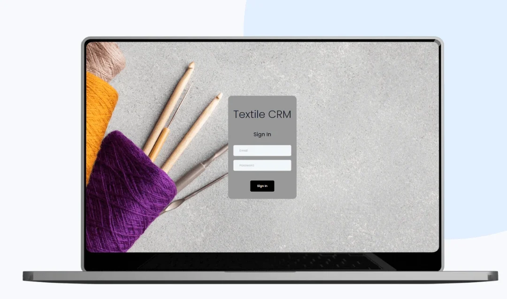

A custom textile CRM that cut HST's manual paperwork by 80% and doubled production tracking speed.
I designed the interface architecture, design system, and web experience for a custom CRM for HST Private Limited, a textile manufacturer, to centralize operations from procurement through production. The Laravel and PHP platform shipped 100+ textile-specific features, automating workflows and giving teams real-time visibility into production and inventory.

The challenge: operations outgrowing manual workflows
As HST Private Limited expanded its textile manufacturing business, it needed centralized operations management to keep pace. The company relied on manual processes that slowed procurement, production, and inventory tracking and left little real-time visibility across departments.
The goal was a robust CRM that automates critical workflows from procurement to production, reduces manual intervention and human error, and gives management a live view of what is happening on the floor.


Our approach: mapping the floor before writing code
We ran in-depth discovery sessions with procurement, production, and management teams to surface bottlenecks, manual effort, and cross-department data needs. Each operation was then translated into a documented digital workflow, from purchase order creation through to production dispatch, with defined user roles and clear automation opportunities.
Design focused on clean, role-based screens and interactive dashboards that minimize input errors while staying consistent with HST's identity. We built the platform on PHP and Laravel, then validated logic, data accuracy, and cross-platform behavior through real-world testing with department heads.


The outcome: automation that scales with the business
The delivered CRM shipped with more than 100 custom features tailored to textile-specific operations, including automated procurement flows, production tracking, smart inventory controls, and dynamic reporting.
The results were an 80% reduction in manual paperwork and 2x faster production tracking that improved delivery accuracy. Role-based access strengthened cross-department collaboration, and the modular architecture leaves HST with a future-ready platform. Post-launch support covers backups, server monitoring, security checks, and ongoing optimisation.
